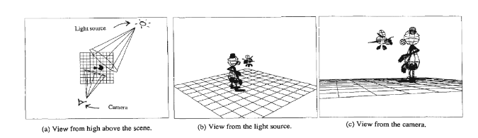
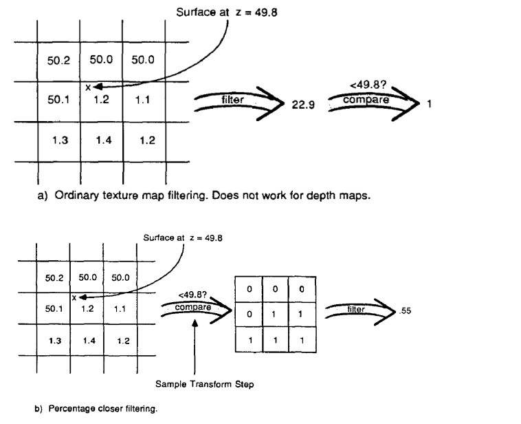
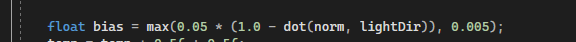

The z-buffer algorithm operates in two passes, as illustrated for a simple scene in Figure 1. In the first pass, a view of the scene is computed from the light source's point of view, and the z values for objects nearest the light are stored in a z-buffer (also known as a depth map). The scene is rendered from the camera's position in the second pass. At each pixel, a point on the surface is transformed to tight source space, and its transformed z is compared against the z of the object nearest the light, as recorded in the depth map. If the transformed z is behind the stored z, the point is considered to be in shadow.
The main problem is that the filtered depth value would be compared to the depth of the surface being rendered to determine whether or not the surface is in shadow at that point. The result of this comparison would be binary, making soft antialiased edges impossible. Another problem is that filtered depth values along the edges of objects would bear no relation to the scene's geometry.
In PCF, the z values of the depth map across the entire region are first compared against the depth of the surface being rendered. This sample transformation converts the depth map under the region into a binary image, which is then filtered to give the proportion of the region in shadow. The resulting shadows have soft, antialiased edges.
The difference between ordinary texture map filtering and percentage closer filtering is shown schematically in Figure 2. In this example, the distance from the light source to the surface to be shadowed is z = 49.8. The region in the depth map that it maps onto (shown on the left in the figures) is a square measuring 3 pixels by 3 pixels.* Ordinary filtering would filter the depth map values to get 22.9 and then compare that to 49.8 to end up with a value of 1 meaning that 100% of the surface was in shadow. Percentage closer filtering compares each depth map value to 49.8 and then filters the array of binary values to arrive at a value of .55 meaning that 55% of the surface is in shadow.
The depth map for each light source is created by computing the depth values for all objects in the image from the light source's point of view. In the screen space of the light, the x- and y-coordinates correspond to pixel locations in the depth map, and the z -coordinate (in floating point) is the distance from the light in world space. We use the term light space to refer to these x, y, and z values.
In the second pass, the scene is rendered from the camera's point of view. Each region to he shaded is first mapped into light space, giving a region in the depth map. Percentage closer filtering is used to determine the proportion of z values in the region of the depth map that are closer to the light than the surface. This gives the proportion of the surface in shadow over the region. This proportion is then used to attenuate the intensity of the light. If several lights in a scene cast shadows, this process is repeated for every light. The attenuated intensities are then used in the shading calculations.
Here, textureSize returns a vec2 containing the width and height of the given sampler texture at mipmap level 0. 1 divided by this yields the size of a single texel, which we use to offset the texture coordinates, ensuring that each new sample samples a different depth value. In this step, we sample 16 values around the projected coordinate's x and y values, check for shadow occlusion, and then average the results by the total number of samples taken. The shadows appear much better and less harsh from a distance. You can still see the resolution artefacts of shadow mapping if you zoom in, but in general, this produces good results for most applications.
While this is generally okay, it becomes an issue when the light source looks at an angle towards the surface as in that case the depth map is also rendered from an angle. Several fragments then access the same tilted depth texel while some are above and some below the floor; we get a shadow discrepancy.
Even though we tried to handle this problem by introducing a bias , we couldn't still completely resolve it . Hence it still exists somewhat.
We provided a solution to the depth buffer shadow algorithm's aliasing problem. This method is based on a texture map technique known as percentage closer filtering. Other algorithm enhancements include using floating point values in the depth map and adding shadow information as part of the shading computations rather than as a postprocess. The new technique also provides a penumbra-like effect by providing control over the softness of shadow edges.
This method is more expensive than the original, both in terms of time and space. Percentage closer filtering takes more time than evaluating a single sample, and floating point numbers typically consume more space than integers